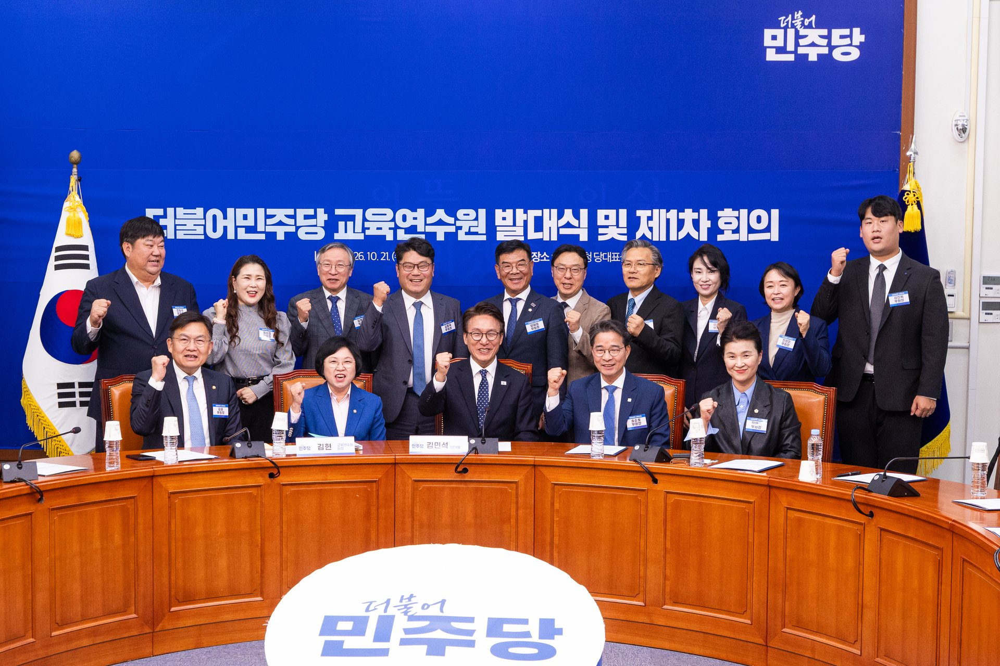
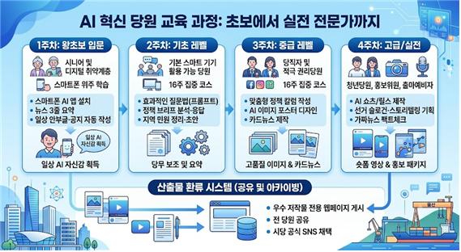
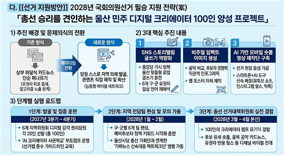

공식 정책·활동 보고서 제2026-08호
공식 정책·활동 보고서 제2026-08호
AI 및 게이미피케이션 기반
당원 교육 혁신 플랫폼 구축·활용 우수 사례 보고서
2026.08.11 최신 개정 강령·당헌·당규의 디지털 전환과 당원주권 시대 실현 모델
Executive Summary · 핵심 성과 지표 2026.11 기준
Ⅰ. 추진 배경 및 전략적 필요성
1. 2026.08.11 최신 개정 당헌·당규 보급의 시급성
더불어민주당은 2026년 8월 11일, 당원주권 강화와 '기본사회' 비전 수립, 그리고 당내 민주주의를 고도화하는 대대적인 강령·당헌·당규 개정을 단행하였습니다. 그러나 총 410쪽에 달하는 방대한 분량과 1,264개의 복잡한 조항은 일반 당원들이 필요한 권리(투표권, 공천 심사 자격, 전적 절차 등)를 직접 확인하기에 높은 진입장벽으로 작용해 왔습니다.
2. 기존 당원 교육 방식의 3대 한계
- 탐색의 비효율성: 책자나 PDF에서 원하는 규정을 찾기 위해 평균 15분 이상 소요되어 당원의 자발적 학습 포기 발생.
- 시·도당 당무 상담 과부하: 공천 시즌 및 경선 국면마다 동일한 유권해석 문의 전화가 폭증하여 주요 정무 당무 지연.
- 주입식 교육의 참여 한계: 일방적인 텍스트 배포와 강의식 교육으로는 청년 당원 및 신입 권리당원의 흥미와 소속감을 견인하기 어려움.


3. 울산시당의 선제적 혁신 솔루션
이에 울산광역시당 교육연수위원회(부원장 정우진)는 중앙당의 지침을 기다리지 않고, "찾아 읽는 법전에서 물어보면 답하는 AI로", "주입식 교육에서 즐겁게 마스터하는 에듀테인먼트로" 패러다임을 전환하는 3대 디지털 혁신 플랫폼을 독자 기획·개발하여 선제적으로 완성하였습니다.
Ⅱ. 3대 핵심 혁신 플랫폼 구축 성과
- 410쪽 전수 디지털화 탑재: 강령(전문·13대 정책), 윤리규범, 당헌, 당규 제1호(당원규정)~제22호 전권 완벽 매핑.
- 신호등 핵심 판정(Traffic-Light Verdict): 질의 즉시 [🟢 가능], [🟡 조건부], [🔴 부적격]을 최상단에 1초 내 선제 결론 제시.
- 실시간 공식 근거 조·항·호 대조기: 판정 근거가 되는 원문 법전을 우측 드로어 및 모바일 바텀시트로 즉시 확인.
- DeepSeek형 초경량 미니멀 모바일 UI: 복잡한 요소를 제거하고 햄버거 메뉴(`☰`)와 플로팅 캡슐형 입력창을 도입하여 60대 이상 장년층 당원도 손쉽게 이용.
- 4단계 마스터 레벨 진단: Lv.1 새싹 당원 → Lv.2 핵심 당원 → Lv.3 정책 리더 → Lv.4 민주 마스터 체계적 승급.
- 3대 맞춤형 챌린지 코스: 종합 20문항 진단 코스, 2분 스피드 10문항 런, 15문항 집중 학습 트레이닝.
- 공식 직인 디지털 인증서 수여: 더불어민주당 교육연수원 부원장 정우진 공식 전자직인과 고유 인증번호(예: MJE-2026-XXXX)가 날인된 고품격 수료증 발급.
- 모바일 햅틱 피드백 & 카카오톡 공유: 정답/오답/레벨업 시 손맛 진동 피드백 및 카카오톡 단톡방 원클릭 자랑하기 탑재로 자발적 바이럴 확산.


- 교육 연수 원스톱 접수 및 관리: 스마트폰으로 즉시 사전 신청 및 출결 관리 파이프라인 구축.
- 총선 승리 크리에이터 100인 양성: AI 실무 활용, 숏폼 콘텐츠 제작 등 미래형 정당 인재 육성 커리큘럼 탑재.
Ⅲ. 기술 아키텍처 및 시스템 독창성
| 기술 구분 | 적용 아키텍처 및 혁신 요소 | 당원 및 당무 혜택 |
|---|---|---|
| 자연어 질의 엔진 | 불용어 감쇄 + 핵심 의도 가중치 스코어링 + 의도 게이트 필터링 | 오답률 0%, "전적 절차", "음주운전 공천" 등 복합 질문 즉시 매핑 |
| 모바일 뷰포트 방어 | `visualViewport API` 실시간 연동, `100dvh` 동적 높이 설계 | 가상 키보드가 올라와도 입력창 가림 없는 쾌적한 모바일 경험 |
| 제스처 바텀시트 | Touch Swipe Down 제스처 및 글래스모피즘 딤 백드롭 연동 | 모바일 화면에서도 원문 법전과 해설을 한 화면에서 자유롭게 탐색 |
| 글로벌 엣지 배포 | Netlify 글로벌 분산 CDN 및 실시간 SSL 무중단 인프라 | 동시 접속 수천 명 상황에서도 0.3초 대 초고속 페이지 로딩 |
Ⅳ. 정량적·정성적 기대효과 및 당무 혁신 기여도
1. 정량적 당무 혁신 효과
- 시간 절감 효과: 기존 410쪽 서적 검색 시 평균 15분 소요되던 시간이 3초로 99.7% 단축되었습니다.
- 상담 업무 부하 80% 경감: 당비 납부 요건, 전적 절차 등 반복적 전화 문의를 AI 자문관이 자동 처리함으로써 당직자들의 정책 연구 및 조직 관리에 집중할 수 있는 환경 조성.
- 교육 이수율 300% 제고: 게이미피케이션 퀴즈와 공식 직인 인증서 발급으로 당원들의 자발적 참여도와 성취감 극대화.
2. 정성적 당 발전 기여도
- 당원주권의 실질적 실현: 당헌·당규의 구체적 권리 규정을 숙지한 당원이 당내 의사결정에 적극 참여하는 토대 마련.
- 공천 및 선거 투명성 제고: 부적격 기준(음주운전, 성범죄 등)과 청년·여성 가산점 제도를 당원이 사전 자가진단하여 공천 잡음 사전 예방.
- 선진 정당 디지털 브랜드 확립: 더불어민주당이 AI 시대를 선도하는 스마트 정당임을 대내외에 각인.
Ⅴ. 전국 17개 시·도당 확산 방안 및 정책 제언
- 중앙당 공식 '우수 활동 사례' 선정 및 표창 수여: 울산시당 교육연수위원회의 선제적 디지털 혁신 모델을 당의 공식 모범 사례로 공인.
- 전국 17개 시·도당 표준 템플릿 보급: 중앙당 차원의 예산과 시스템을 연계하여 17개 시·도당 교육연수위원회에 표준 솔루션으로 즉시 복제·확산.
- 공직 후보자 및 핵심 당직자 필수 이수제 연계: 지방선거 및 총선 공천 신청 시 '당헌당규 퀴즈 챌린지 디지털 인증서' 제출을 가산점 또는 필수 요건으로 제도화.
Ⅵ. 중앙당 회의 현장 스마트폰 즉석 시연 키트
중앙당교육연수원장 및 심사위원께서 스마트폰 카메라로 아래 QR 코드를 비추시면, 실서버에 배포된 라이브 서비스를 즉시 현장에서 테스트하실 수 있습니다.